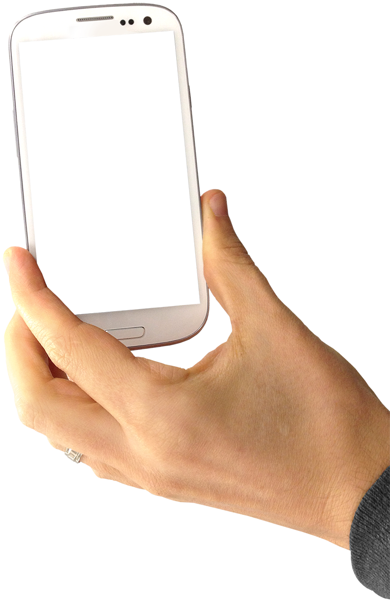
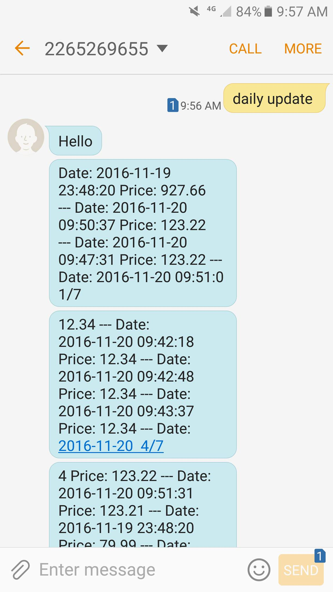

With cutting-edge technology making payments faster more intuitive,
it's important to keep track of your spendings. Transactual is a program that will help you track your phone tap
spendings.
Just message the program bot and ask for things like,
"How much did I spend on my last transaction?"
or
"What were my spendings last week?"
Transactual will answer your question in mere seconds, giving you the flexibility and swiftness
that third party apps and websites cannot provide.
Now, go back to reading that magazine or sipping that capuccino, and be assured in your everyday spendings.
You do not need to use or set up anything! Just install our APK that takes care of recording your transaction amounts via screenshots, and you're ready to go! All of your infromation is securely stored in the cloud, and when you text a question to your bot, it will retrieve your information only for you.
 "This is lit!" - Transactual devs
"Is my pizza here yet?" - Jackson
Or talk to one of our developers at FinHacks!